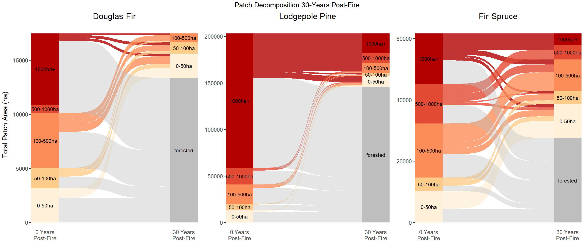
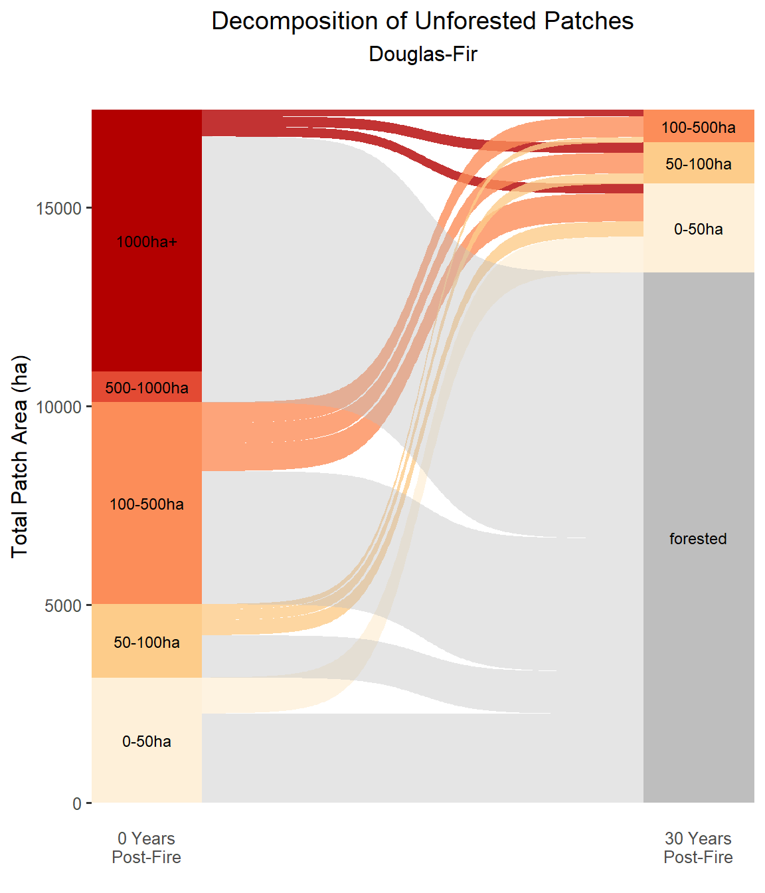
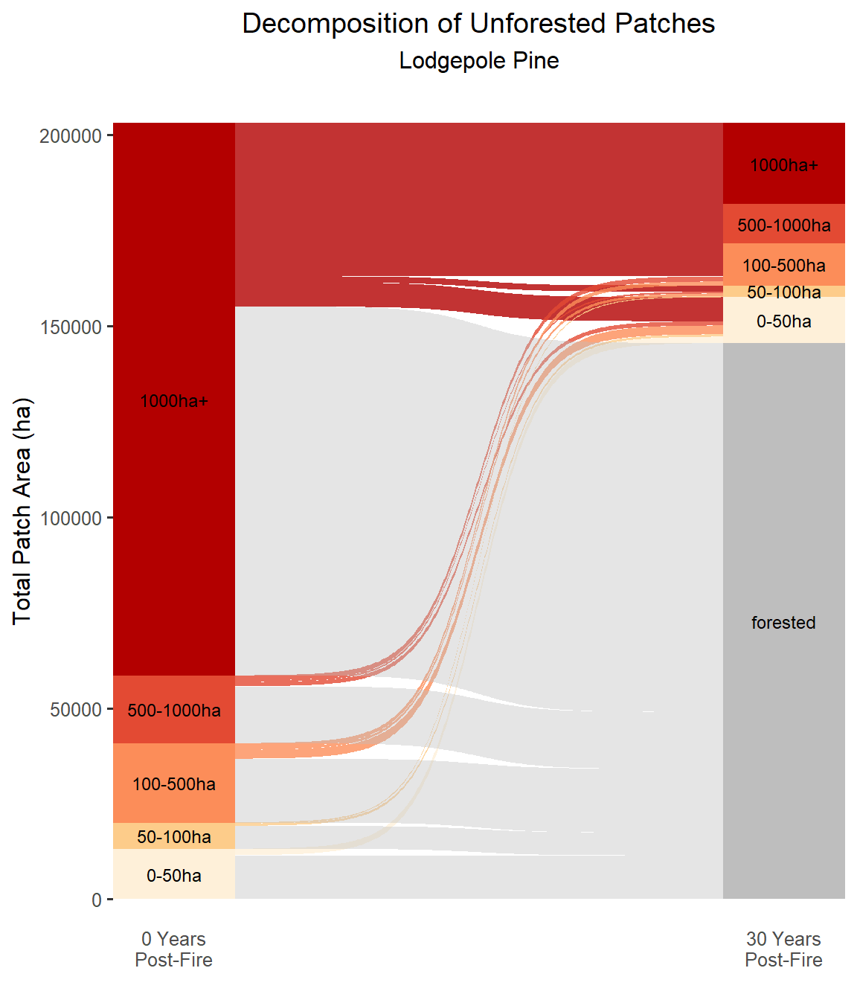
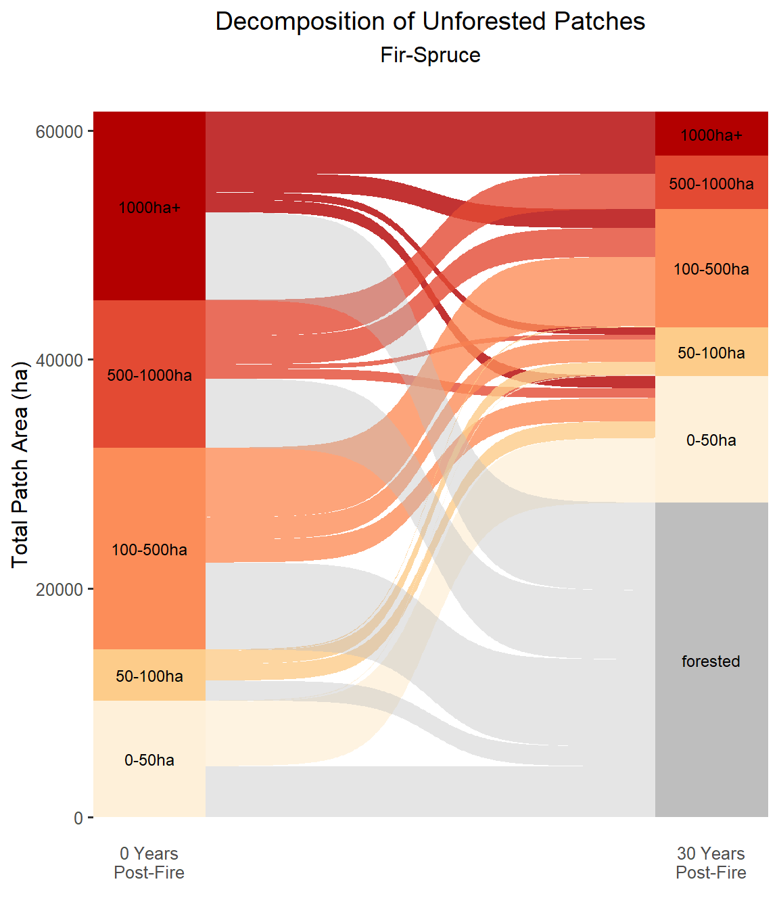

Part 12 Patch Fate
12.1 Set Up
12.1.1 Libraries
library(tidyverse)
library(terra)
library(sf)
library(ggsankey)
library(gridExtra)
sf_use_s2(FALSE)12.1.2 Import High-Severity Patches
# fire list
fire_list <- c("Fire_7_1988","Fire_9_1988","Fire_10_1988","Fire_11_1988","Fire_12_1988","Fire_13_1988","Fire_14_1988","Fire_15_1988","Fire_16_1988","Fire_18_1988","Fire_19_1988","Fire_20_1988","Fire_22_1988","Fire_23_1988","Fire_25_1988","Fire_26_1988","Fire_28_1988","Fire_29_1988","Fire_31_1988","Fire_32_1989","Fire_33_1989","Fire_35_1989","Fire_38_1989","Fire_41_1989","Fire_42_1989","Fire_48_1990","Fire_49_1991","Fire_50_1991","Fire_51_1991","Fire_54_1991","Fire_1_1988","Fire_2_1988","Fire_3_1988","Fire_4_1988")
# import high-severity patches
patches <- st_read("data/patches/highsev_patches.shp") %>%
mutate(Patch_ID = str_c(Fire_ID,"-",1:n())) %>%
st_transform(crs = "EPSG:4326")## Reading layer `highsev_patches' from data source
## `G:\Other computers\My Laptop\Documents\Grad School\Research\ConiferRegeneration\data\patches\highsev_patches.shp'
## using driver `ESRI Shapefile'
## Simple feature collection with 5904 features and 10 fields
## Geometry type: POLYGON
## Dimension: XY
## Bounding box: xmin: -118.6156 ymin: 42.57637 xmax: -106.96 ymax: 48.92836
## Geodetic CRS: WGS 84# set crs
crs <- crs(patches)12.2 Calculate Patch Decomposition
12.2.1 Function to Track Patch Changes
get_patches <- function(fire_name){
print(fire_name)
# select last timepoint's raster
rast_fire <- rast(str_c("data/prediction_rasters/",fire_name,"_rf_t9.tif"))
# use the high severity patches as t0
t0_patches <- patches %>%
filter(Fire_ID == fire_name) %>%
dplyr::select(Fire_ID, Patch_ID,ecoregn,ptch_fr) %>%
mutate(t0_area = as.numeric(st_area(.))/10000)
# convert the t9 raster to polygons
t9_patches <- as.polygons(rast_fire) %>%
st_as_sf() %>%
st_cast(to = "POLYGON") %>%
st_transform(crs = crs)
# join the t9 polygons to the original t0 patches to track decomposition
conversion_df <- st_join(t9_patches,t0_patches,left = TRUE,largest = TRUE) %>%
st_intersection(.,st_union(t0_patches))%>%
mutate(t9_area = as.numeric(st_area(.))/10000) %>%
st_drop_geometry()
# export csv
write_csv(conversion_df,str_c("data/patch_fate/",fire_name,".csv"))
}12.2.2 Apply Function to All Fires
# get the decomposition df for each fire
map(fire_list,get_patches)12.2.3 Create Dataset for Each Forest Type
# import and join all decomposiition csvs
patch_data <- do.call(bind_rows,lapply(list.files(path = "data/patch_fate", pattern = "Fire", all.files=TRUE, full.names=TRUE),read_csv))%>%
mutate(t0_group = case_when(t0_area > 1000 ~ "1000ha+",
t0_area > 500 & t0_area <1000 ~ "500-1000ha",
t0_area > 100 & t0_area <5000 ~ "100-500ha",
t0_area > 50 & t0_area <100~ "50-100ha",
t0_area < 50 ~ "0-50ha"),
t9_group = case_when(lyr1 == 1 & t9_area > 1000 ~ "1000ha+",
lyr1 == 1 & t9_area > 500 & t9_area <1000 ~ "500-1000ha",
lyr1 == 1 & t9_area > 100 & t9_area <5000 ~ "100-500ha",
lyr1 == 1 & t9_area > 50 & t9_area <100~ "50-100ha",
lyr1 == 1 & t9_area < 50 ~ "0-50ha",
lyr1 == 2 ~ "forested"))
# test = patch_data %>%
# group_by(Patch_ID) %>%
# summarize(area = mean(t0_area))
# sum(test$area)
# sum(patch_data$t9_area)
# filter data to each forest type, and prepare data for alluvial polot
patches_df <- patch_data %>%
filter(ptch_fr == "Douglas-Fir") %>%
make_long(t0_group,t9_group,value = t9_area)
patches_df$node <- factor(patches_df$node,levels = c("forested","0-50ha","50-100ha","100-500ha","500-1000ha","1000ha+"))
patches_df$next_node <- factor(patches_df$next_node,levels = c("forested","0-50ha","50-100ha","100-500ha","500-1000ha","1000ha+"))
patches_df$value <- as.numeric(patches_df$value)
patches_lp <- patch_data %>%
filter(ptch_fr == "Lodegepole Pine")%>%
make_long(t0_group,t9_group,value = t9_area)
patches_lp$node <- factor(patches_lp$node,levels = c("forested","0-50ha","50-100ha","100-500ha","500-1000ha","1000ha+"))
patches_lp$next_node <- factor(patches_lp$next_node,levels = c("forested","0-50ha","50-100ha","100-500ha","500-1000ha","1000ha+"))
patches_lp$value <- as.numeric(patches_lp$value)
patches_fs <- patch_data %>%
filter(ptch_fr == "Fir-Spruce")%>%
make_long(t0_group,t9_group,value = t9_area)
patches_fs$node <- factor(patches_fs$node,levels = c("forested","0-50ha","50-100ha","100-500ha","500-1000ha","1000ha+"))
patches_fs$next_node <- factor(patches_fs$next_node,levels = c("forested","0-50ha","50-100ha","100-500ha","500-1000ha","1000ha+"))
patches_fs$value <- as.numeric(patches_fs$value)12.3 Plot
12.3.1 Develop Plotting
# prepare alluvial plots for each forest type
# order by the node category
patches_lp <- patches_lp[order(patches_lp$next_node),]
# used to block the forested patch flows from color set
alphas2 <- c(rep(0,2800),rep(0.8,8600))
# used to block unforested patch flows from the null color set
colors <- c(rep("gray",2800),rep("#fc8d59",8600))
alphas <- c(rep(.4,2800),rep(0,8600))
plot_lp<- ggplot(patches_lp, aes(x = x, next_x = next_x, node = node, next_node = next_node, fill = factor(node), label = node,value = value)) +
geom_alluvial(flow.alpha = alphas2,width =.2)+# plots colored flows for the unforested patches
geom_alluvial(flow.alpha = alphas,flow.fill=colors,width =.2) +# plots null flows for the forested patches
geom_alluvial_text(size = 3.2, color = "black") +# adds node label
scale_fill_manual(values = c('#fef0d9','#fc8d59','#b30000','#fdcc8a','#e34a33',"gray")) + # adds base node colors
theme_alluvial(base_size = 12) +# sets font/plot size
labs(x = NULL, y= NULL,title = "Lodgepole Pine") +# labels
theme(legend.position = "none")+# remove legend title
theme(plot.title = element_text(hjust = 0.5),plot.subtitle = element_text(hjust = 0.5),axis.text.x = element_text(vjust = 6)) + # centers the plot title, adjust x axis labels
scale_x_discrete(labels = c('0 Years\nPost-Fire','30 Years\nPost-Fire'),expand = c(0, 0)) +# relabels the x axis names
theme(panel.grid = element_blank(),panel.border = element_blank()) # remove excess white space
patches_df <- patches_df[order(patches_df$next_node),]
alphas2 <- c(rep(0,2800),rep(0.8,6200))
colors <- c(rep("gray",2800),rep("#fc8d59",6200))
alphas <- c(rep(.4,2800),rep(0,6200))
plot_df<- ggplot(patches_df, aes(x = x, next_x = next_x, node = node, next_node = next_node, fill = factor(node), label = node,value = value)) +
geom_alluvial(flow.alpha = alphas2,width =.2)+
geom_alluvial(flow.alpha = alphas,flow.fill=colors,width =.2) +
geom_alluvial_text(size = 3.2, color = "black") +
scale_fill_manual(values = c('#fef0d9','#fc8d59','#b30000','#fdcc8a','#e34a33',"gray")) +
theme_alluvial(base_size = 12) +
labs(x = NULL, y= NULL,title = "Douglas-Fir") +
theme(legend.position = "none")+
theme(plot.title = element_text(hjust = 0.5),plot.subtitle = element_text(hjust = 0.5),axis.text.x = element_text(vjust = 6)) +
scale_x_discrete(labels = c('0 Years\nPost-Fire','30 Years\nPost-Fire'), expand = c(0, 0)) +
theme(panel.grid = element_blank(),
panel.border = element_blank())
patches_fs <- patches_fs[order(patches_fs$next_node),]
colors <- c(rep("gray",2800),rep("#fc8d59",10400))
alphas <- c(rep(.4,2800),rep(0,10400))
alphas2 <- c(rep(0,2800),rep(0.8,10400))
plot_fs <-ggplot(patches_fs, aes(x = x, next_x = next_x, node = node, next_node = next_node, fill = factor(node), label = node,value = value)) +
geom_alluvial(flow.alpha = alphas2,width =.2)+
geom_alluvial(flow.alpha = alphas,flow.fill=colors,width =.2) +
geom_alluvial_text(size = 3.2, color = "black") +
scale_fill_manual(values = c('#fef0d9','#fc8d59','#b30000','#fdcc8a','#e34a33',"gray")) +
theme_alluvial(base_size = 12) +
labs(x = NULL, y= NULL,title = "Fir-Spruce") +
theme(legend.position = "none") +
theme(plot.title = element_text(hjust = 0.5),plot.subtitle = element_text(hjust = 0.5), axis.text.x = element_text(vjust = 6)) +
scale_x_discrete(labels = c('0 Years\nPost-Fire','30 Years\nPost-Fire'), expand = c(0, 0)) +
theme(panel.grid = element_blank(),
panel.border = element_blank())12.3.2 All Three Forest Types
# plot the three plots together
grid.arrange(plot_df,plot_lp,plot_fs,ncol=3,top = "Patch Decomposition 30-Years Post-Fire", left = "Total Patch Area (ha)")
12.3.3 Forest Types Individually
# plot individually
plot_df + labs(y= "Total Patch Area (ha)",title = "Decomposition of Unforested Patches",subtitle = "Douglas-Fir")
plot_lp + labs(y= "Total Patch Area (ha)",title = "Decomposition of Unforested Patches",subtitle = "Lodgepole Pine")
plot_fs + labs(y= "Total Patch Area (ha)",title = "Decomposition of Unforested Patches",subtitle = "Fir-Spruce")